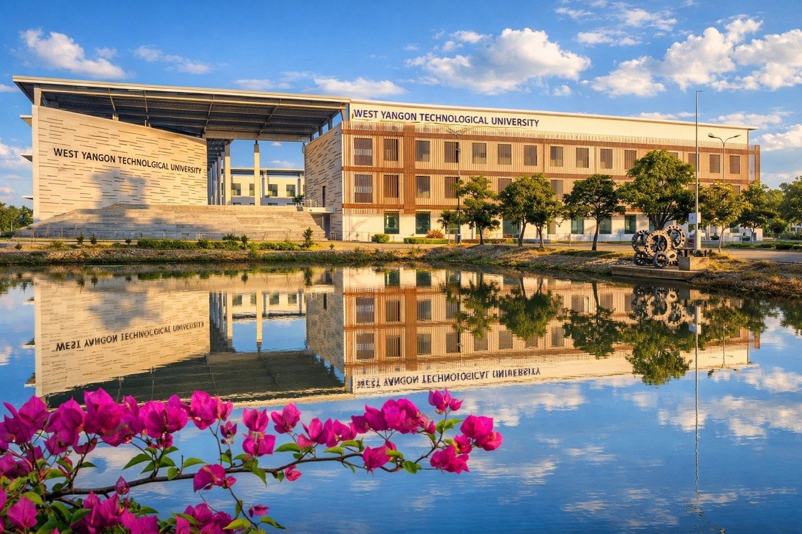

About West Yangon Technological University
Leading technological higher education, engineering research, and professional innovation in West Yangon, Myanmar.
Institutional Overview
West Yangon Technological University (WYTU) stands as one of Myanmar's key public engineering institutions under the Ministry of Education. Situated in Hlaing Tharyar Township, WYTU serves as an academic beacon for engineering education, technological advancement, and regional development.
The university offers comprehensive undergraduate degree programs spanning 11 core engineering fields alongside essential foundational academic disciplines in science, mathematics, and humanities.

University History
WYTU was established to expand higher technological education capacity in the Yangon metropolitan area and supply skilled engineers for industrial development.
Official historical archival records will be updated soon.
Our Vision
To become a nationally recognized and internationally respected technological university that fosters innovative engineering leaders, sustainable technologies, and impactful scientific research.
Our Mission
To provide high-quality engineering education, conduct practical research addressing national infrastructure needs, and cultivate professional ethics and leadership among all engineering graduates.
Academic Excellence
Key pillars of education at West Yangon Technological University.
6-Year B.E. Degree
Rigorous 6-year engineering curriculum blending core theory, laboratory work, and internship.
Practical Testing
Hands-on laboratory experiments and computer simulations in specialized department facilities.
Capstone Projects
Final-year engineering design models solving practical structural, software, and industrial problems.
Industry Alignment
Collaborations with industrial development zones and engineering enterprises.
Message from the Rectorate
"Welcome to West Yangon Technological University. Our institution remains steadfast in its dedication to technical rigor, character building, and technological leadership for Myanmar's future."